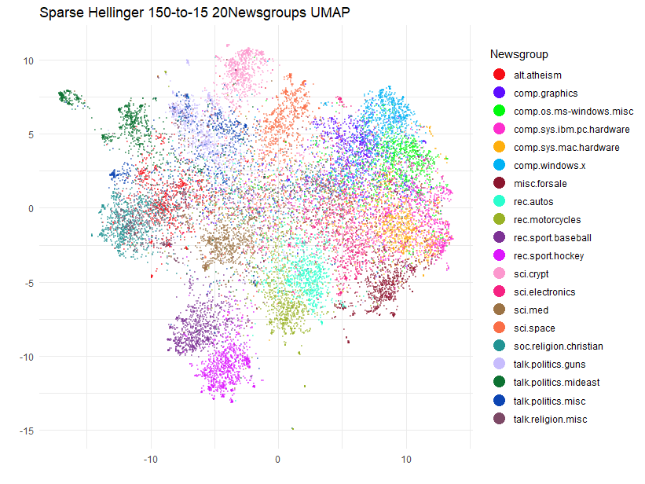

Text Analysis of the 20 Newsgroups Dataset
A great use case for working with sparse data is TF-IDF text
analysis. Despite the prevalence of deep-learning-based text embedding,
TF-IDF is simple, far less compute intensive and can be surprisingly
effective. Most dimensionality reduction methods don’t work well with
sparse data, and need the input data to be dense. uwot is
no different, but one of the Python UMAP’s unique features is that it
can work with sparse data, due to its use of PyNNDescent for
nearest neighbor search.
There is a Python UMAP with sparse data tutorial that uses the 20 Newsgroups dataset that I have long wanted to replicate in R. The main barriers have been the lack of a straight-forward way to download the data and the lack of a fast approximate nearest neighbor search package that can work with sparse data.
The first problem is solved with the snedata package, to
which I recently added a download_twenty_newsgroups
function. That took up a large chunk of one afternoon and evening. The
second problem is solved by replicating the PyNNDescent package in R.
This took me a bit longer, but a mere 4 years later, the rnndescent
package is finally in a usable state. Consequently, the
uwot package can now make use of rnndescent
and support sparse input via the umap2 function.
So let’s get started. Apart from the Python example above, some other good resources for doing text analysis on this dataset can be found in chapter 9 of text mining with R and the juicily-titled Python notebook 20 Newsgroups Secrets.
Downloading the 20 Newsgroups Dataset
The 20 Newsgroups
dataset is (nearly) 20,000 usenet posts sampled (nearly) equally from 20
different newsgroups. The webpage linked above contains more information
on the data’s provenance and structure. We can use
snedata::download_twenty_newsgroups to download it:
devtools::install_github("jlmelville/snedata")
ng20 <- snedata::download_twenty_newsgroups(subset = "all", verbose = TRUE)The subset argument can be used to download only the
training or test set data but I will use all of it. The
verbose argument is useful to see how what it’s doing: it
will take a few minutes to download it. It’s a tar.gz file
and unfortunately, I am unaware of a way to stream tar data directly
into R, so download_twenty_newsgroups will download the
file to a temporary directory, extract everything, and attempt to clean
up afterwards. If something goes wrong it should log the directory it
downloaded to.
dim(ng20)The data is returned as a data frame with 6 columns:
names(ng20)The Id column is a unique identifier for each post,
FileId is the filename combined with the
Subset, Text is the post text,
Subset is either "train" or
"test", Label is the integer label of the
newsgroup and Newsgroup is the name of the newsgroup.
The columns we will be most interested in are the Text
and Newsgroup, and for some data manipulation we need to
do, the Id so we can keep track of the rows. Here’s the
first row without the Text column (we can safely ignore the
row id):
ng20[1, -3]And here’s the first few characters of the text:
substr(ng20[1, ]$Text, 1, 72)There is a lot more where that came from, which I invite you
to investigate (and fill your terminal with) yourself. Notably,
snedata doesn’t do any processing of the posts, so the
headers are still there, as are the footers and any other quotations of
previous posts that the current poster might be replying to.
Preprocessing the Data
Unless you get very luck with pre-cleaned datasets, text data usually requires a fair amount of processing to turn it into a vector of numbers that UMAP can work on, so we will need to do some text wrangling to start with. We’ll need to install dplyr, tidyr and stringr, for this:
Text Mining with R is a good place to start to get some ideas of what to do, but bear in mind the dataset is structured a bit differently, so let’s temporarily expand the dataset by splitting the text on new lines like in the tidy text mining example so that each row is a line in the original post:
ng20spl <- ng20 |> separate_longer_delim(`Text`, delim = "\n")
dim(ng20spl)Now the first row looks like:
ng20spl[1, ] Id FileId Text Subset Label Newsgroup
1 train_1 49960 From: mathew <mathew@mantis.co.uk> train 0 alt.atheismThe first filtering is to remove headers (anything before the first blank line) and footers (assumed to be anything after the first line of repeated hyphens):
cleaned_text <- ng20spl |>
group_by(`Newsgroup`, `Id`) |>
filter(
cumsum(`Text` == "") > 0,
cumsum(str_detect(`Text`, "^--")) == 0
) |>
ungroup()
dim(cleaned_text)And this attempts to removed quoted text:
cleaned_text <- cleaned_text |>
filter(
str_detect(`Text`, "^[^>]+[A-Za-z\\d]") |
`Text` == "",
!str_detect(`Text`, "writes(:|\\.\\.\\.)$"),
!str_detect(`Text`, "^In article <")
)
dim(cleaned_text)These functions are a bit different from the ones used on the python
side by scikit-learn
– see the functions strip_newsgroup_header,
strip_newsgroup_quoting and
strip_newsgroup_footer, but if the R functions are good
enough for the tidy text modelers, it’s good enough for me.
Also, in the tidy text book, they explicitly remove two items “that contained a large amount of non-text content”. Specifically they are images, and you can find out more about them in the “20 Newsgroups Secrets” notebook linked above (don’t get too excited). There seems to be other binary data in some of the posts, so to try and catch more, I will end up filtering those out later.
The tidy text example goes on to examine the word frequencies for
each newsgroup as a whole, but we will go back to analyzing on a per
post basis. Now, having split the posts into lines, we need to unsplit
them, and also re-associate the other columns from the original
ng20 data:
text_unsplit <-
cleaned_text |>
group_by(`Id`) |>
summarise(`Text` = paste(`Text`, collapse = " "))
text_unsplit <- ng20 |>
select(-`Text`) |>
left_join(text_unsplit, by = "Id")
text_unsplit <-
text_unsplit[, c("Id", "FileId", "Text", "Subset", "Label", "Newsgroup")]
dim(text_unsplit)Back to the original structure. This processing isn’t perfect, but it should do a decent job. Now we can do some actual text processing.
Text Mining
I’m going to use the tm package for the text mining:
install.packages("tm")
library(tm)We are going to create a “corpus” from the text and then apply
various processing steps to normalize the text, such as handling
whitespace, case, removing punctuation and so on. When we create the
Corpus initially, we also convert the text encoding from
latin1 to UTF-8 via the iconv
function. As far as I can tell, the 20 Newsgroups data is in
latin1 encoding (sklearn also reads them in
that encoding), which we will then convert to UTF-8 for the
rest of the processing. There are still a few documents with odd
formatting characters but tm seems to deal with them
without issue.
corpus <-
Corpus(VectorSource(iconv(text_unsplit$Text, "latin1", "UTF-8"))) |>
tm_map(content_transformer(tolower)) |>
tm_map(removePunctuation) |>
tm_map(removeNumbers) |>
tm_map(removeWords, stopwords("english")) |>
tm_map(stripWhitespace)
length(corpus)Filtering Out Bad Documents
At this point, I take a bit of inspiration from
20 Newsgroups Secrets and start looking at the distribution
of document lengths in terms of number of words and number of
characters. If our corpus really is mainly English text we would expect
to see some kind of rough relationship between these sorts of values and
any deviations are likely to be anomalies that need investigating.
This is a bit of a diversion from the business at hand, but we might as well see if we can come up with some reasonable filter values using some simple methods.
count_words <- function(doc) {
doc |>
strsplit(" ") |>
unlist() |>
length()
}
nwords <- sapply(corpus, count_words)
summary(nwords)Clearly there is quite a skew in terms of the number of words. Some messages now have zero words, and one has nearly 7000. But the median is less than 50 words. Let’s look at the distribution of the number of words, but stop at 95% of the data to avoid the outliers:
So 95% of the data contains 250 words or less.
What is this massive document? Let’s (carefully) take a look:
Ah, it’s a FAQ. Ok that makes sense. Now let’s look at the distribution of the raw length of the documents in terms of number of characters:
Seems reminiscent of the word count distribution. So let’s see how related they are (you’d assume very related but you never know):
plot(nwords, nchars, main = "Number of words vs number of characters")Ok that’s a very good relation, which makes those documents which don’t appear on the main trendline all the more suspicious. The easy way to deal with this is to define an average word length:
avg_word_lengths <- nchars / nwords
summary(avg_word_lengths)Those NA’s are the documents with zero words. This looks
like another rather skewed distribution:
hist(avg_word_lengths[avg_word_lengths <= quantile(avg_word_lengths, 0.95, na.rm = TRUE)],
main = "0-95% average word length distribution"
)So 95% of the data has an average word length of 8 or less.
This gives us a bit of a feel for what might be some reasonable
filter settings to get rid of unsuitable data. The filters established
by 20 Newsgroups Secrets for document length based on word
seem reasonable here: less than 10 words is suspicious and 2000 or more
words is also suspicious.
To avoid making this even longer than it needs to be, I won’t be investigating the suspicious documents in this article.
is_suspiciously_short <- function(doc) {
doc |> count_words() <= 9
}
suspiciously_short_indices <- sapply(corpus, is_suspiciously_short)
corpus <- corpus[!suspiciously_short_indices]
text_unsplit <- text_unsplit[!suspiciously_short_indices, ]
length(corpus)
is_suspiciously_long <- function(doc) {
doc |> count_words() >= 2000
}
suspiciously_long_indices <- sapply(corpus, is_suspiciously_long)
corpus <- corpus[!suspiciously_long_indices]
text_unsplit <- text_unsplit[!suspiciously_long_indices, ]
length(corpus)
avg_word_len <- function(doc) {
(doc |> str_length()) / (doc |> count_words())
}
has_suspiciously_short_words <- function(doc) {
doc |> avg_word_len() < 4
}
suspiciously_short_word_indices <- sapply(corpus, has_suspiciously_short_words)
corpus <- corpus[!suspiciously_short_word_indices]
text_unsplit <- text_unsplit[!suspiciously_short_word_indices, ]
length(corpus)
has_suspiciously_long_words <- function(doc) {
doc |> avg_word_len() > 15
}
suspiciously_long_word_indices <- sapply(corpus, has_suspiciously_long_words)
corpus <- corpus[!suspiciously_long_word_indices]
text_unsplit <- text_unsplit[!suspiciously_long_word_indices, ]
length(corpus)Ok, I think we’ve done enough to move on.
TF-IDF
The next step is to convert the corpus into a matrix of TF-IDF values:
tfidf <- weightTfIdf(DocumentTermMatrix(corpus))
dim(tfidf)Nearly 90,000 dimensions, each one a weighted word frequency. How sparse is it:
0.0006920568so less than 0.1% of the matrix is non-zero.
One way to proceed at this point would be to use a SVD that can work on sparse matrices, such as irlba, and turn this into a dense representation with far fewer dimensions. However this is slow and takes up a lot of memory and you have to spend time working out how many dimensions to use, which slows things down even more if you don’t get it right the first time.
Fortunately, now that uwot can use
rnndescent, we can work on the sparse data directly.
UMAP with NN-Descent
To use uwot with sparse data we need to convert the
TF-IDF matrix into a format from the Matrix package that
rnndescent can handle:
library(Matrix)
tfidf_sp <-
sparseMatrix(
i = tfidf$i,
j = tfidf$j,
x = tfidf$v,
dims = dim(tfidf)
)For historical reasons to do with not breaking backwards
compatibility, we can’t use the umap function with sparse
input data. Instead we will use the umap2 function, which
is a newer version of umap but with slightly better
defaults and which can take sparse matrix input. We also need to load
the rnndescent package.
install.packages("rnndescent")
library(rnndescent)In terms of non-default options, I’m going to use the
batch = TRUE setting, a longer than usual optimization, and
a non-zero dens_scale to model some of the original density
differences in the data (see the article on LEOPOLD
for more details). I will also save the nearest neighbors with
ret_nn = TRUE so I can compare them with the exact results
we will calculate later.
library(uwot)
ng20_umap <-
umap2(
X = tfidf_sp,
nn_method = "nndescent",
metric = "hellinger",
n_epochs = 1000,
batch = TRUE,
dens_scale = 0.5,
ret_nn = TRUE,
verbose = TRUE
)Using nndescent for nearest neighbor search
UMAP embedding parameters a = 1.577 b = 0.8951
Read 17666 rows and found 88894 numeric columns
Using alt metric 'alternative-hellinger' for 'hellinger'
Initializing neighbors using 'tree' method
Calculating rp tree k-nearest neighbors with k = 15 n_trees = 17 max leaf size = 15 margin = 'explicit' using 6 threads
Using angular margin calculation
0% 10 20 30 40 50 60 70 80 90 100%
[----|----|----|----|----|----|----|----|----|----]
***************************************************
Extracting leaf array from forest
Creating knn using 32172 leaves
0% 10 20 30 40 50 60 70 80 90 100%
[----|----|----|----|----|----|----|----|----|----]
***************************************************
Running nearest neighbor descent for 14 iterations using 6 threads
0% 10 20 30 40 50 60 70 80 90 100%
[----|----|----|----|----|----|----|----|----|----]
***************************************************
Convergence: c = 170 tol = 264.99
Finished
Commencing smooth kNN distance calibration using 6 threads with target n_neighbors = 15
17 smooth knn distance failures
Initializing from normalized Laplacian + noise (using irlba)
Range-scaling initial input columns to 0-10
Commencing optimization for 1000 epochs, with 389106 positive edges using 6 threads
Using method 'leopold'
Optimizing with Adam alpha = 1 beta1 = 0.5 beta2 = 0.9 eps = 1e-07
0% 10 20 30 40 50 60 70 80 90 100%
[----|----|----|----|----|----|----|----|----|----|
**************************************************|
Optimization finishedIf you follow along with the code here, you will not get the exact same results as me when you plot them below, due to the stochastic nature of UMAP. But you should see something similar (if you don’t, please file an issue).
Plot the Results
This is going to be a bit challenging to plot, as we have to have 20 unique colors for the 20 newsgroups. Most palettes don’t offer anything of that size, so I am going to use the Polychrome package to generate a palette with 20 colors which are hopefully reasonably distinguishable. This is a similar approach to the Python package glasbey.
library(Polychrome)
set.seed(42)
palette <- as.vector(Polychrome::createPalette(
length(levels(text_unsplit$Newsgroup)) + 2,
seedcolors = c("#ffffff", "#000000"),
range = c(10, 90)
)[-(1:2)])I will also rotate the coordinates so they align along the principal axes:
ng20_umap_rotated <- prcomp(ng20_umap$embedding)$xOk, now to make the plot with ggplot2:
library(ggplot2)
ggplot(
data.frame(ng20_umap_rotated, Newsgroup = text_unsplit$Newsgroup),
aes(x = PC1, y = PC2, color = Newsgroup)
) +
geom_point(alpha = 0.4, size = 0.5) +
scale_color_manual(values = palette) +
theme_minimal() +
labs(
title = "Sparse Hellinger NN-Descent 20Newsgroups UMAP",
x = "",
y = "",
color = "Newsgroup"
) +
theme(legend.position = "right") +
guides(color = guide_legend(override.aes = list(size = 5, alpha = 1)))Although we can’t compare this result too easily with the Python example, as that one plots the training and test set separately, and there isn’t a legend, I think this has done a pretty good job of separating at least some of the 20 newsgroups.
Finding Exact Nearest Neighbors
Before uwot supported using rnndescent
internally for sparse data, this article documented the process of using
rnndesent directly with the 20 Newsgroups data and then
integrating that with the umap function. This is still a
perfectly viable approach, especially if you want to use exact nearest
neighbors. uwot uses the nearest neighbor descent method to
find approximate nearest neighbors, which is faster but not exact. In
what follows we’ll use rnndescent to find exact nearest
neighbors by a brute force method and then see what sort of difference
that makes to the UMAP result.
I’ll assume you’ve been following along so far, so that we have the
L1-normalized TF-IDF matrix tfidf_spl1 and
rnndescent loaded. Now let’s use the brute-force search in
rnndescent. This dataset is small enough for us to handle
an exact search comfortably, at least if you have enough cores:
tfidfl1_hell_bf <-
brute_force_knn(
tfidf_sp,
k = 15,
metric = "hellinger",
n_threads = 6,
verbose = TRUE
)Using alt metric 'alternative-hellinger' for 'hellinger'
Calculating brute force k-nearest neighbors with k = 15 using 6 threads
0% 10 20 30 40 50 60 70 80 90 100%
[----|----|----|----|----|----|----|----|----|----]
***************************************************
FinishedThis took about 35 seconds on my machine, whereas nearest neighbor descent only took about 5 seconds. That said, in this case I am happy to pay the price of the extra 30 seconds to avoid any issues due to approximation.
UMAP with Exact Neighbors
We can now run UMAP with the exact neighbors. I will use the same
parameters in conjunction with umap2 as I did with the
approximate nearest neighbors:
ng20_umap_exact <-
umap2(
X = NULL,
nn_method = tfidfl1_hell_bf,
n_epochs = 1000,
batch = TRUE,
dens_scale = 0.5,
verbose = TRUE
)UMAP embedding parameters a = 1.577 b = 0.8951
Commencing smooth kNN distance calibration using 6 threads with target n_neighbors = 15
16 smooth knn distance failures
Initializing from normalized Laplacian + noise (using irlba)
Range-scaling initial input columns to 0-10
Commencing optimization for 1000 epochs, with 377272 positive edges using 6 threads
Using method 'leopold'
Optimizing with Adam alpha = 1 beta1 = 0.5 beta2 = 0.9 eps = 1e-07
0% 10 20 30 40 50 60 70 80 90 100%
[----|----|----|----|----|----|----|----|----|----|
**************************************************|
Optimization finishedPlot the Exact Neighbors UMAP Results
ggplot(
data.frame(prcomp(ng20_umap_exact)$x, Newsgroup = text_unsplit$Newsgroup),
aes(x = PC1, y = PC2, color = Newsgroup)
) +
geom_point(alpha = 0.4, size = 0.5) +
scale_color_manual(values = palette) +
theme_minimal() +
labs(
title = "Sparse Hellinger Exact Neighbors 20Newsgroups UMAP",
x = "",
y = "",
color = "Newsgroup"
) +
theme(legend.position = "right") +
guides(color = guide_legend(override.aes = list(size = 5, alpha = 1)))Actually, although the plots share a lot of the same features there are some noticeable differences to some of the cluster placements.
Hubness
What’s going on here? If you want, you can re-run the UMAP with the
exact nearest neighbors a few times, which will tell us how much the
result varies due to the random selection during negative sampling. I
will leave that as an exercise for you. Having tried it myself, the plot
is pretty stable (the sci.space cluster moves between two
locations). So the reason for the differences is going to be down to the
performance of the approximate nearest neighbors. As we have gone to the
trouble of generating the exact nearest neighbors we can answer the
question of how well did we actually do in reproducing the exact
neighbors? rnndescent has a neighbor_overlap
function we can use which will return a value of 0 (no overlap between
two sets of neighbors) and 1 (perfect overlap):
neighbor_overlap(ng20_umap$nn$hellinger, tfidfl1_hell_bf)[1] 0.7484169So about 75% accuracy, that’s less than the 90% that I would usually
be happier with. I’m not totally surprised as high dimensional datasets
tend to contain “hubs” (items which appear on the nearest neighbor lists
of many other items) and these tend to make it hard for any approximate
nearest neighbor method to do a good exploration. Does this combination
of dataset, n_neighbors and metric result in
the neighbors having a hub. Once again rnndescent can help
us with its k_occur function which will count the
k-occurrence for each item: the number of times an item appears in the
nearest neighbor lists of other items (aka the number of reverse
neighbors). The hubness for a dataset can be defined as the maximum
number of times any item appears in the k-occurrence list, and I am
going to normalize that with respect to n_neighbors:
20.13333A dataset where each item gets its fair share of reverse neighbors
would result in a maximum k-occurrence of n_neighbors, or
in this case a normalized hubness of 1. So we are at a much larger value
than that. My own personal experience is that if the normalized hubness
exceeds 10, then approximate nearest neighbors methods will struggle to
do well, at least if you are looking for relatively low values of
n_neighbors with default settings. Incidentally, you don’t
need the exact nearest neighbors to detect hubness, the approximate
results will also act as a good diagnostic:
30.46667Not necessarily good at reproducing the result from the exact neighbors, but it will certainly tell you that something is up.
UMAP with More Neighbors
So what are we going to do about this? In these cases, usually
increasing n_neighbors helps. I’m going to look at
n_neighbors = 50. We will also want the equivalent brute
force results to see if it helped:
tfidfl1_hell_bf_50 <-
brute_force_knn(
tfidf_sp,
k = 50,
metric = "hellinger",
n_threads = 6,
verbose = TRUE
)Let’s see what’s up with the hubness:
[1] 20.1Not that different to the n_neighbors = 15 result, but I
have more confidence that nearest neighbor descent will be able to
handle this level of hubness given the larger n_neighbors
value. But let’s find out.
ng20_umap_50 <-
umap2(
X = tfidf_sp,
nn_method = "nndescent",
metric = "hellinger",
n_neighbors = 50,
n_epochs = 1000,
batch = TRUE,
dens_scale = 0.5,
ret_nn = TRUE,
verbose = TRUE
)[1] 21.12A similar level of hubness reported, but more importantly, what’s the accuracy like?
neighbor_overlap(ng20_umap_50$nn$hellinger, tfidfl1_hell_bf_50)[1] 0.955375396%! Much better. Let’s see how the UMAP plot looks:
ggplot(
data.frame(prcomp(ng20_umap_50$embedding)$x, Newsgroup = text_unsplit$Newsgroup),
aes(x = PC1, y = PC2, color = Newsgroup)
) +
geom_point(alpha = 0.4, size = 0.5) +
scale_color_manual(values = palette) +
theme_minimal() +
labs(
title = "Sparse Hellinger Approximate 50-Neighbors 20Newsgroups UMAP",
x = "",
y = "",
color = "Newsgroup"
) +
theme(legend.position = "right") +
guides(color = guide_legend(override.aes = list(size = 5, alpha = 1)))Well, the clusters have spread out a bit (expected due to the 3-fold
increase in n_neighbors) but they have also continued to
move around a bit compared to the n_neighbors = 15 result.
Hmm, let’s see if at least we have agreement with the exact case for
n_neighbors = 50:
ng20_umap_exact_50 <-
umap2(
X = NULL,
nn_method = tfidfl1_hell_bf_50,
n_epochs = 1000,
batch = TRUE,
dens_scale = 0.5,
verbose = TRUE
)
ggplot(
data.frame(prcomp(ng20_umap_exact_50)$x, Newsgroup = text_unsplit$Newsgroup),
aes(x = PC1, y = PC2, color = Newsgroup)
) +
geom_point(alpha = 0.4, size = 0.5) +
scale_color_manual(values = palette) +
theme_minimal() +
labs(
title = "Sparse Hellinger Exact 50-Neighbors 20Newsgroups UMAP",
x = "",
y = "",
color = "Newsgroup"
) +
theme(legend.position = "right") +
guides(color = guide_legend(override.aes = list(size = 5, alpha = 1)))Again, some of the clusters are on the move compared to the
approximate case. It seems that the locations of sci.crypt
and the rec.sports.baseball/rec.sports.hockey
pair are particularly sensitive.
UMAP with Even More Neighbors
The next step would be to increase n_neighbors even
further and see if results are more stable. The maximum I usually
consider is n_neighbors = 150: this is the sort of number
that would be used by methods like t-SNE with a fairly large perplexity
of 50. Fortunately, in my testing the results for this value of
n_neighbors actually are stable so we don’t need
to go higher this time. To get something that visually resembles the
original n_neighbors = 15 result, my strategy is to run
UMAP with progressively smaller values of n_neighbors using
the output of the previous run as the initialization. This isn’t as time
consuming as it could be because we only need to do the nearest neighbor
search once and the optimizations before the final step can use the
faster t-UMAP gradient, which will be used by umap2 if it
detects a = 1 and b = 1 being passed. The
following uses n_neighbors = 150,
n_neighbors = 50 and then finished off at
n_neighbors = 15:
ng20_umap_150 <- umap2(
X = tfidf_sp,
nn_method = "nndescent",
metric = "hellinger",
n_epochs = 1000,
batch = TRUE,
verbose = TRUE,
n_neighbors = 150,
a = 1,
b = 1,
ret_nn = TRUE
)
ng20_umap_150_50 <- umap2(
X = tfidf_sp,
nn_method = list(
idx = ng20_umap_150$nn$hellinger$idx[, 1:50],
dist = ng20_umap_150$nn$hellinger$dist[, 1:50]
),
n_epochs = 1000,
batch = TRUE,
verbose = TRUE,
a = 1,
b = 1,
init = ng20_umap_150$embedding
)
ng20_umap_150_50_15 <- umap2(
X = tfidf_sp,
nn_method = list(
idx = ng20_umap_150$nn$hellinger$idx[, 1:15],
dist = ng20_umap_150$nn$hellinger$dist[, 1:15]
),
n_epochs = 1000,
batch = TRUE,
verbose = TRUE,
dens_scale = 0.5,
init = ng20_umap_150_50
)
ggplot(
data.frame(prcomp(ng20_umap_150_50_15)$x, Newsgroup = text_unsplit$Newsgroup),
aes(x = PC1, y = PC2, color = Newsgroup)
) +
geom_point(alpha = 0.4, size = 0.5) +
scale_color_manual(values = palette) +
theme_minimal() +
labs(
title = "Sparse Hellinger Exact 150-to-15 20Newsgroups UMAP",
x = "",
y = "",
color = "Newsgroup"
) +
theme(legend.position = "right") +
guides(color = guide_legend(override.aes = list(size = 5, alpha = 1))) This strategy can work well if you can find a
suitable starting value for n_neighbors that isn’t too
onerous. Bear in mind that quite apart from the computational cost of
finding a large number of neighbors and the consequent increase in
number of edges that need optimizing, a more “global” setting is not
always better as you could be short-circuiting the manifold structure of
the data. It seems to have worked out in this case, though, and repeated
runs give a layout which is much more stable than the original
n_neighbors = 15 case.
Conclusion
If you install rnndescent and use the umap2
function, it’s possible to embed sparse high-dimensional datasets using
UMAP and you can even use relatively exotic metrics like Hellinger
divergence.
Be aware that high-dimensional datasets can contain hubs. For low
values of n_neighbors, you may not get as high nearest
neighbor accuracies as you are used to. rnndescent has
functions which can help detect hubness. Increasing
n_neighbors can help, but you should still be wary of
over-interpreting the relative positions of clusters in the output. Yes,
I know everyone says this but it bears repeating because the temptation
is always there. I recommend re-running your UMAP results multiple times
with any given settings, even if you have exact nearest neighbors, and
you should also repeat with different values of n_neighbors
(e.g. 50 and/or 150). “Annealing” the
n_neighbors value down in a series of optimizations can
work out well.